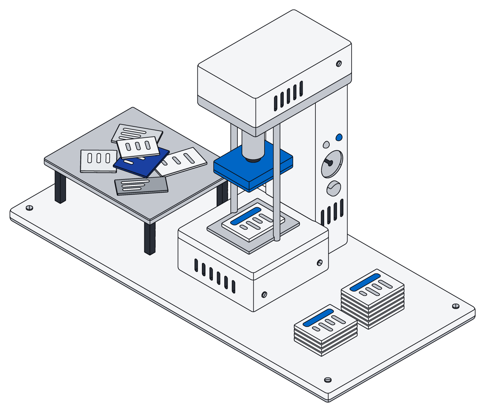

Nobody's work arrives tidy. A customer writes three paragraphs where one line would do. A contract shows up as a scanned PDF. A price is agreed in a chat message with a thumbs-up. A phone number is typed four different ways by four different people.
Most tools ask you to clean this up before it is useful: fill in the form, pick the right folder, copy the number into the right field. In practice, nobody does, and the useful parts stay buried. Archive takes a different approach. Let things arrive as they are, then let your AI do the filing.
Connect once, and it stays current
It starts with connectors for the tools you already use: Gmail and Outlook, Google Drive and SharePoint, Slack and Teams, HubSpot and Salesforce, Zendesk, Stripe, QuickBooks and more. You connect an account once, and Archive keeps a copy of what is in it up to date.
Three things about how that works matter more than the list:
- They only read. Connectors ask for read access and never send, edit or delete anything in the original tool. Your inbox stays your inbox.
- They bring in only what changed. After the first pass, Archive picks up new and edited items as they happen instead of copying everything again. Busy accounts stay fresh, quiet ones are checked less often.
- Recent things come first. The first pass walks your history from newest to oldest, so this week's mail is searchable long before last year's.
Messages, calendar events, tickets, CRM entries and payments land as records. Files land as files, with their text pulled out so they can be searched. When something is deleted at the source, it goes away in Archive too, so the copy never drifts from the original.
One day at a small company
Picture a five-person property management company looking after a few dozen rental units. Here is an ordinary Tuesday, and what happens to it.
7:40 a.m. A leaking sink
A tenant emails a photo and a long message: the sink in unit 4B is leaking again, she is home after five, and her new number is 415.555.0134. The email arrives through the Gmail connector. The company's AI assistant reads it, finds the tenant and the unit, opens a maintenance request linked to both, attaches the photo, and updates her phone number on her tenant record.
9:15 a.m. A signed lease
An owner drops a signed lease into a shared Drive folder. The file arrives as a file, with its text extracted. The assistant reads it, creates a lease record with the start date, the monthly rent of $1,850 and the deposit, and links it to the unit and the new tenant.
11:05 a.m. A quote in chat
The plumber replies in a Slack thread: "can do Thursday, 480 all in." The assistant adds the quote to the maintenance request from this morning: $480.00, Thursday's date, the plumber as the vendor.
2:30 p.m. A new lead
A prospective owner fills in the website form, which lands in HubSpot. The connector brings in the contact. The assistant checks whether this person already exists, finds an old email thread from last spring, and links them instead of creating a duplicate.
4:50 p.m. Rent comes in
A rent payment clears in Stripe. The assistant marks this month's rent for unit 4B as paid, with the amount and the date.
Nobody on the team filled in a form all day. Yet by evening there is a clean maintenance request with a photo, a quote and a vendor; a lease with real numbers; a lead with history; and an up-to-date rent ledger. Anyone who opens Archive sees the same picture, in the lists and boards they already use.
Let things arrive as they are. Let your AI do the filing. Keep the result clean enough to trust.
The same thing, written the same way
Filing is only half of it. The other half is consistency. The tenant wrote her number as 415.555.0134. The CRM has it as (415) 555-0134. An old email signature says +1 415 555 0134. To a person these are obviously the same. To a search box, a report or another AI, they are three different strings.

Archive cleans common kinds of information as it is written, whoever writes it and wherever it came from. Phone numbers, email addresses, amounts of money, dates and addresses are stored in one consistent form. "$480" and "480.00 USD" are stored as the same amount, and every phone number above becomes one. That is what makes the rest possible: totals add up, duplicates are easy to spot, and a question like "what did we spend on plumbing this quarter?" has one honest answer.
You stay in charge of the result
Automatic filing only helps if you can trust it, so Archive keeps it visible and safe:
- It all lands where your team works. What the assistant files shows up in the same records, boards and calendars your team uses, and anyone with access can correct it by hand.
- Changes are all-or-nothing. When your assistant files something, every part of the change lands together or none of it does, so nothing ends up half done.
- Access rules apply to the AI too. The assistant sees and changes only what the person it works for is allowed to.
- The originals are untouched. Because connectors only read, nothing your AI does in Archive can change the email, file or chat it came from.
Archive does not bring its own AI to this. The filing is done by the assistant you choose, whether that is ChatGPT, Claude, Gemini or Grok, working in your workspace under your rules.
Where to start
Start small. Connect one shared inbox and one drive. Set up the handful of records your business actually runs on: clients, jobs, invoices, or whatever yours are called. Then ask your assistant to file the last month and look at what it made. Fix what is wrong, tell it why, and let it continue.
Within a few days, the mess is still arriving, because that is how work arrives. It just no longer stays a mess.